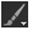
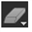
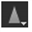
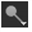
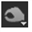

图标
工具
键盘快捷键
函数

画笔
N (在刷子和橡皮擦之间切换)
在当前板上应用颜色，或将颜色与当前板混合。您也可以从周围的框架克隆。

橡皮擦
N
从现有笔划中删除像素并恢复背景。
克隆
C (在克隆和显示之间切换)
将当前板的一个区域中的像素应用于当前板的另一个区域。
揭示
C
将源板中的像素应用于相应位置的目标板。

模糊
X (在模糊、锐化和涂抹之间切换)
模糊笔刷笔划区域中的图像。

锐化
X
在笔刷笔划区域中锐化图像。
涂抹
X
涂抹涂抹笔刷笔划的区域，将选定像素拉伸到其周围区域。

道奇
D (在道奇和烧伤之间切换)
使画笔笔划区域上的背景颜色变亮，以反映画笔笔划。在黑色上使用这个工具不会产生任何变化。中风区没有一部分是黑暗的。

燃烧
D
使笔刷描边区域上的背景色变暗以反映笔刷描边。中风区域的任何部分都没有变亮。